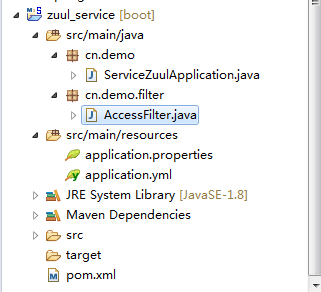
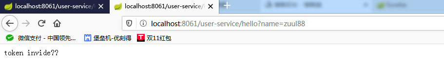
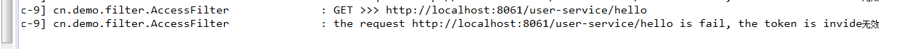
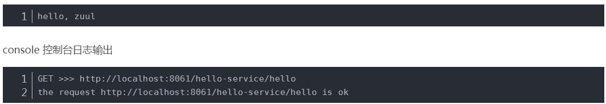
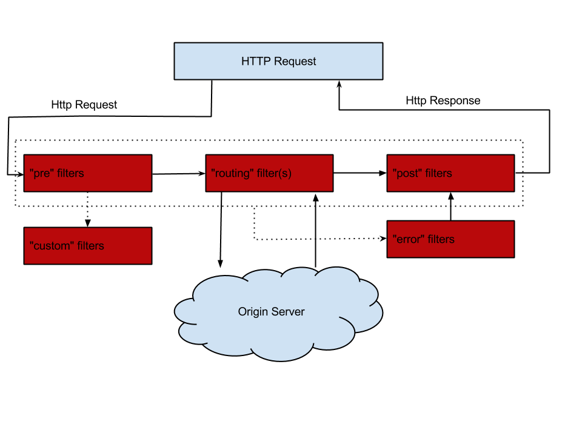
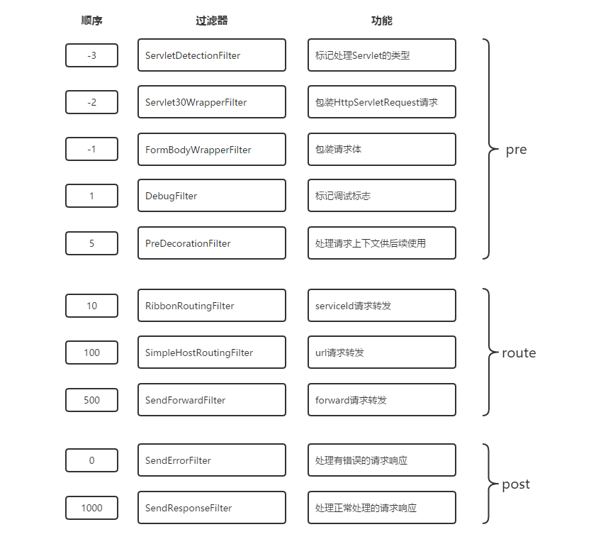

在微服务架构中，通常会有多个服务提供者。设想一个电商系统，可能会有商品、订单、支付、用户等多个类型的服务，而每个类型的服务数量也会随着整个系统体量的增大也会随之增长和变更。作为UI端，在展示页面时可能需要从多个微服务中聚合数据，而且服务的划分位置结构可能会有所改变。网关就可以对外暴露聚合API，屏蔽内部微服务的微小变动，保持整个系统的稳定性。
Zuul是Spring Cloud全家桶中的微服务API网关。
主要功能是对请求的路由和过滤。
1.整体资源不够的情况下，需要关掉一些服务，待稳定了，再重启。2.校验token的情况。
所有从设备或网站来的请求都会经过Zuul到达后端的Netflix应用程序。作为一个边界性质的应用程序，Zuul提供了动态路由、监控、弹性负载和安全功能。Zuul底层利用各种filter实现如下功能：
在Spring Cloud微服务系统中，一种常见的负载均衡方式是，客户端的请求首先经过负载均衡（Ngnix），再到达服务网关（zuul集群），然后再到具体的服务。服务统一注册到高可用的服务注册中心集群（eureka, consul），服务的所有的配置文件由配置服务管理，配置服务的配置文件放在git仓库，方便开发人员随时改配置。
————————————————
二、动态路由

pom.xml:
<dependencies>
<dependency>
<groupId>org.springframework.boot</groupId>
<artifactId>spring-boot-starter-web</artifactId>
</dependency>
<dependency>
<groupId>org.springframework.boot</groupId>
<artifactId>spring-boot-starter-test</artifactId>
<scope>test</scope>
</dependency>
<dependency>
<groupId>org.springframework.cloud</groupId>
<artifactId>spring-cloud-starter-eureka</artifactId>
</dependency>
<dependency>
<groupId>org.springframework.cloud</groupId>
<artifactId>spring-cloud-starter-zuul</artifactId>
</dependency>
</dependencies>application.properties:
spring.application.name=service-zuul
server.port=8061
## 注册服务中心的配置
eureka.client.service-url.defaultZone=http://localhost:8001/eureka/
#zuul.routes.<route>.path配置拦截请求的路径
#zuul.routes.<route>.serviceId配置拦截之后路由到的指定的eureka服务
#这里除了能结合eureka服务，指定serviceId使用，还可以指定为一个url地址，比如zuul.routes.hello-service.path=http://localhost:8011
zuul.routes.user-service.path=/user-service/**
zuul.routes.user-service.serviceId=USER-SERVICE
# 注释上面，改成user-service.url直接访问百度
#zuul.routes.user-service.url=http://pay.weixin.qq.com/partner/public/home
#zuul.routes.user-service.url=http://localhost:8011zuul.routes.<route>.path与zuul.routes.<route>.serviceId分别配置zuul拦截请求的路径，以及拦截之后路由到的指定的eureka服务
这里除了能结合eureka服务，指定serviceId使用，还可以指定为一个url地址，比如zuul.routes.hello-service.path=http://localhost:8011
application.yml:
##timeout config
hystrix:
command:
default:
execution:
timeout:
enabled: true
isolation:
thread:
timeoutInMilliseconds: 60000
ribbon:
ReadTimeout: 60000
ConnectTimeout: 60000
MaxAutoRetries: 0
MaxAutoRetriesNextServer: 1
eureka:
enabled: true
zuul:
max:
host:
connections: 500
host:
socket-timeout-millis: 60000
connect-timeout-millis: 60000启动类 Application.java:
package cn.demo;
import org.springframework.boot.SpringApplication;
import org.springframework.boot.autoconfigure.SpringBootApplication;
import org.springframework.cloud.netflix.eureka.EnableEurekaClient;
import org.springframework.cloud.netflix.zuul.EnableZuulProxy;
@SpringBootApplication
@EnableZuulProxy
@EnableEurekaClient
public class ServiceZuulApplication {
public static void main(String[] args) {
SpringApplication.run(ServiceZuulApplication.class, args);
}
}这里使用@EnableZuulProxy表示开启zuul网关。
@EnableEurekaClient为了结合eureka，调用注册在eureka中的服务，所以zuul这里也是作为eureka的客户端。当然这里也可以使用@EnableDiscoveryClient，可以发现@EnableEurekaClient注解实现包含了@EnableDiscoveryClient，这里只用来调用eureka服务的话，两个都可以使用，如果要使用其他的，比如consul，那就只能用@EnableDiscoveryClient了。
测试:
启动eureka:8001, hello-service:8011,8012，zuul-service:8061
我们访问：http://localhost:8061/user-service/hello?name=zuul
表示路由成功。而且重复访问还可以发现默认使用了ribbon负载均衡。
接下来我们改成：
zuul.routes.user-service.path=/user-service/**
zuul.routes.user-service.url=http://localhost:8011同样的，访问：http://localhost:8061/hello-service/hello?name=zuul
当然如果我们把连接改成百度网址，那么就直接跳转到百度去了。
既然在SpringCloud生态体系使用zuul，那么最好结合eureka ribbon使用。
三、网关过滤--(登录，权限校验)
如果在整个体系中，每个微服务都自己去管理用户状态，那显然是不可取的，所以一般都是放在服务网关中的。那么我们就需要在服务网关中统一处理用户登录状态，是否放行用户请求。
这里我们来实现zuul网关过滤器，实现每个接口获取参数中的access_token， 判断是否合法，合法则放行，不合法则拦截并提示错误。
package cn.demo.filter;
import com.netflix.zuul.ZuulFilter;
import com.netflix.zuul.context.RequestContext;
import org.apache.commons.lang.StringUtils;
import org.slf4j.Logger;
import org.slf4j.LoggerFactory;
import org.springframework.stereotype.Component;
import javax.servlet.http.HttpServletRequest;
/**
* 服务请求过滤器
*/
@Component
public class AccessFilter extends ZuulFilter {
private static Logger log = LoggerFactory.getLogger(AccessFilter.class);
//路由之前
@Override
public String filterType() {
return "pre";
}
//过滤的顺序
@Override
public int filterOrder() {
return 0;
}
//这里可以写逻辑判断，是否要过滤，本文true,永远过滤
@Override
public boolean shouldFilter() {
return true;
}
@Override
public Object run() {
RequestContext requestContext = RequestContext.getCurrentContext();
HttpServletRequest request = requestContext.getRequest();
log.info("{} >>> {}", request.getMethod(), request.getRequestURL().toString());
String access_token = request.getParameter("access_token");
if(StringUtils.isBlank(access_token) || !"test".equals(access_token)){
// zuul过滤该请求
requestContext.setSendZuulResponse(false);//表示不继续转发该请求。
requestContext.setResponseStatusCode(401);//返回的状态码，这里为401
requestContext.setResponseBody("token invide无效");//返回的内容，可以指定为一串json
log.info("the request {} is fail, the token is invide无效", request.getRequestURL().toString());
} else {
log.info("the request {} is ok", request.getRequestURL().toString());
}
return null;
}
}filterType：返回一个字符串代表过滤器的类型，在zuul中定义了四种不同生命周期的过滤器类型，具体如下：
pre：路由之前
routing：路由之时
post： 路由之后
error：发送错误调用
filterOrder：过滤的顺序
shouldFilter：这里可以写逻辑判断，是否要过滤，本文true,永远过滤。
run：过滤器的具体逻辑。可用很复杂，包括查sql，nosql去判断该请求到底有没有权限访问。
上面指定filterType：pre表示在路由之前拦截请求，shouldFilter始终为true，表示永远过滤，并执行run方法。
requestContext.setSendZuulResponse(false);表示不继续转发该请求。
requestContext.setResponseStatusCode(401);返回的状态码，这里为401
requestContext.setResponseBody("token is invalid");返回的内容，可以指定为一串json
测试
重新启动 zuul-service:8061
访问：http://localhost:8061/hello-service/hello?name=zuul
浏览器返回401

console 控制台日志输出：

接下来我们访问：http://localhost:8061/hello-service/hello?name=zuul&access_token=test

表示校验过滤，放行请求。
从图中，我们可以看到，当外部HTTP请求到达API网关服务的时候，首先它会进入第一个阶段pre，在这里它会被pre类型的过滤器进行处理，该类型的过滤器主要目的是在进行请求路由之前做一些前置加工，比如请求的校验等。在完成了pre类型的过滤器处理之后，请求进入第二个阶段routing，也就是之前说的路由请求转发阶段，请求将会被routing类型过滤器处理，这里的具体处理内容就是将外部请求转发到具体服务实例上去的过程，当服务实例将请求结果都返回之后，routing阶段完成，请求进入第三个阶段post，此时请求将会被post类型的过滤器进行处理，这些过滤器在处理的时候不仅可以获取到请求信息，还能获取到服务实例的返回信息，所以在post类型的过滤器中，我们可以对处理结果进行一些加工或转换等内容。另外，还有一个特殊的阶段error，该阶段只有在上述三个阶段中发生异常的时候才会触发，但是它的最后流向还是post类型的过滤器，因为它需要通过post过滤器将最终结果返回给请求客户端

